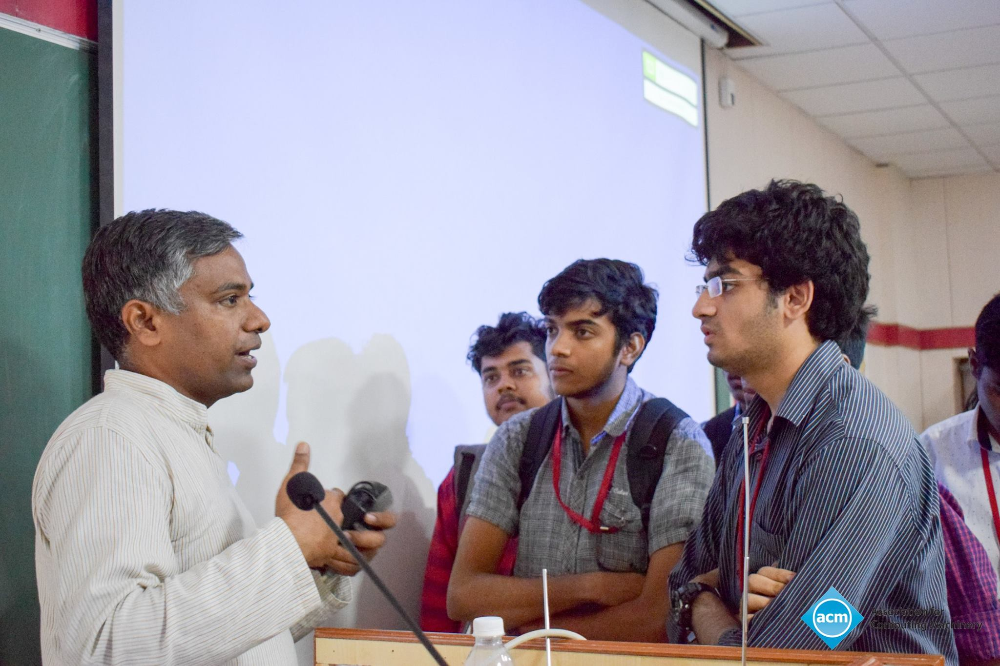

About
The Association for Computing Machinery,ACM is the World’s largest computing society.It brings together professionals in the field of Computing & IT from across the globe, to inspire, share resources and address the field's challenges. With the involvement of their enthusiastic members, the ACM-W Chennai chapter and the SRM ACM Student chapters have brought laurels not just to the University but also to ACM India by gaining striking recognition for their marvelous chapter activities.
Previous Events
Started in Feb 2016, the ACM-W Chennai chapter has worked exorbitantly in organizing various events such as:
- a Seminar on ‘NP Hard Problems’ by professor Naveen Garg-IIT Delhi
- a talk by Dr. Valentina Salapura-an IEEE Fellow and IBM Master Inventor and System Architect at the IBM T.J. Watson Research Center on ‘cloud computing’.

- A talk on 'Deep Learning' by Rohit Saha
- Supermoon and Star Gazing Event
- A Talk on 'Artificial Intelligence and it's Future' by Anshuman Pandey and Aditthya Ramakrishnan
In light of the organization of these previous events, the chapter was chosen by ACM India and had the honour of hosting the AICWIC 2017 conference at the SRM Kattankulathur,Chennai campus to celebrate, motivate and promote all women in computing.
Upcoming Events
IOT Trends and Challenges workshop: February 1-2

The workshop aims to address the challenges as well as the promising avenues of Internet of Things in the future. The two day workshop organized for Students, Faculty and Research Scholars has a set of experts from industry and academia coming to shed light on these 2 topics. Events include:
- Inaugral talk by Shrishra Rao, a Distinguised ACM Speaker.
- Key Note Address by Gaurav Bhargava, Software Development Manager of Amazon, Chennai.
- Hands-on Session on “Contiki Operating System with Cooja Simulator”.
- technical session by industrial expert from Cisco and Amazon.
Contact Us
Email: srmacmstudent@gmail.com